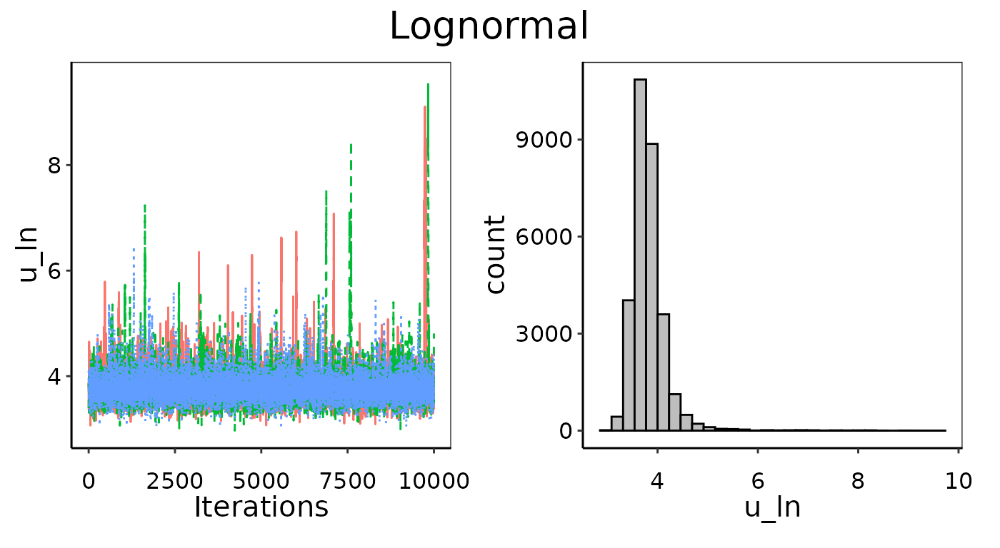
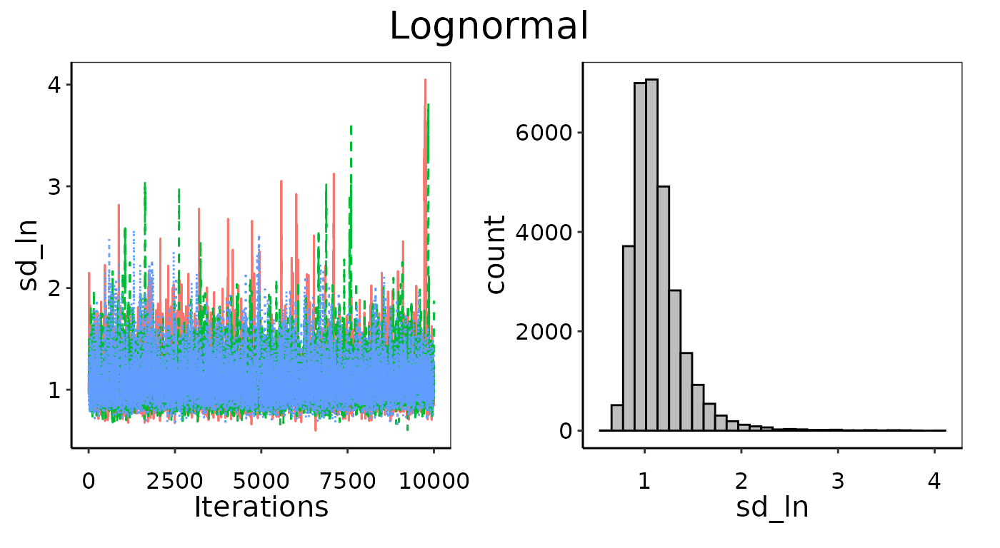
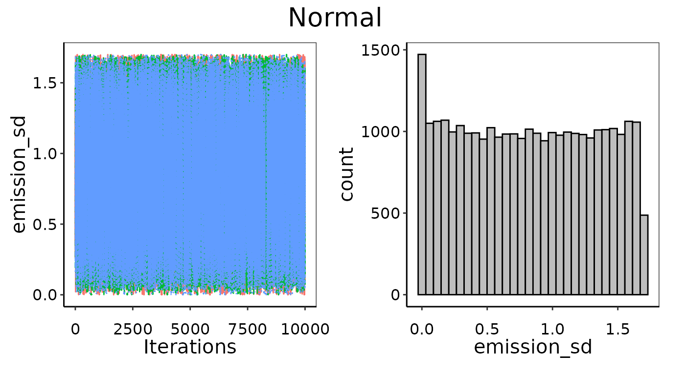
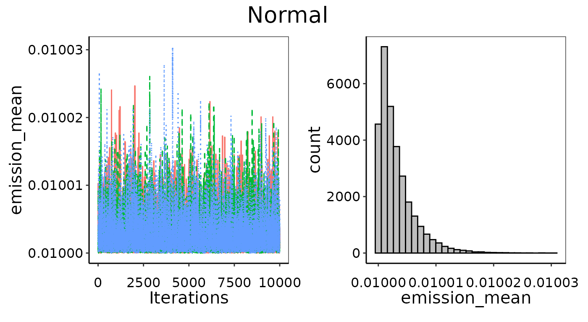
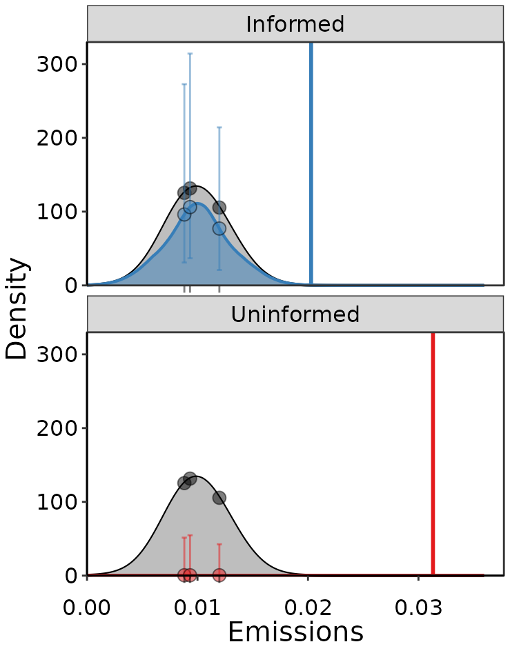
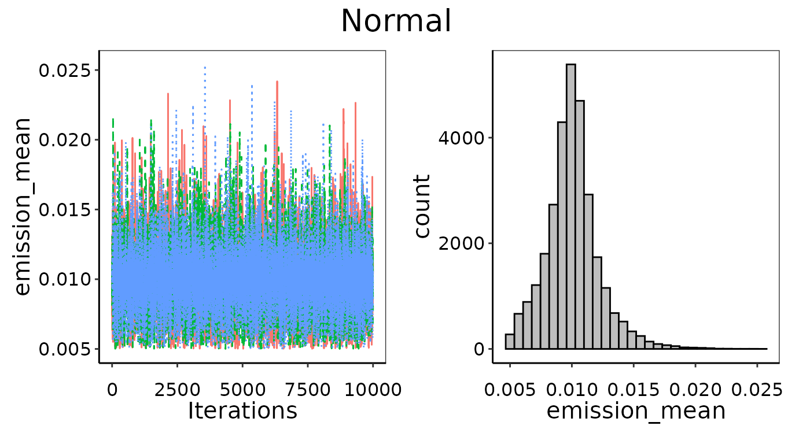
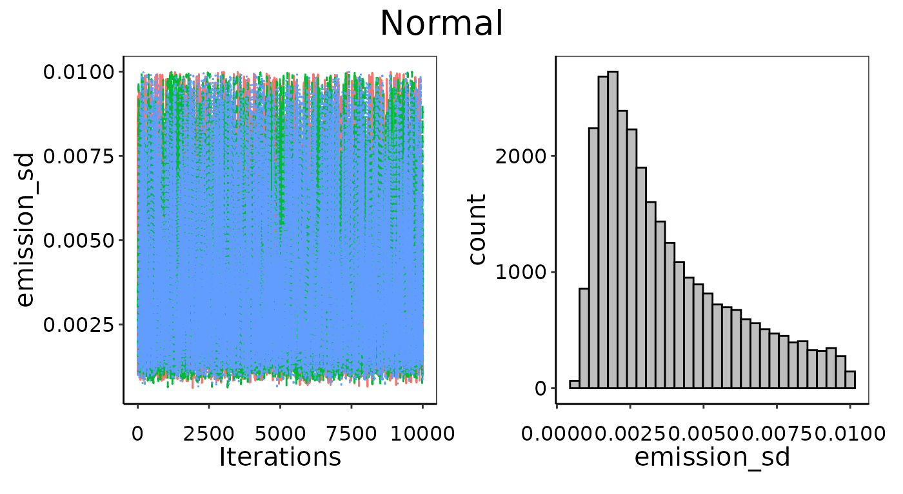

Introduction
This vignette provides further details on convergence and prior
distributions for Bayesian_UPL(). We recommend already
having some familiarity with using the default settings of
Bayesian_UPL() and working through the examples in
vignette("Bayesian-UPL") before reading further.
Convergence
Convergence of distribution parameters is assessed quantitatively using the Gelman-Rubin diagnostic and qualitatively by producing figures in a convergence report pdf document.
The diagnostics are available in the $conv_output table
from Bayesian_UPL() or from using
converge_likelihood() directly on the results of
run_likelihood(). There are several variables in the
conv_output table: the distribution as distr,
its corresponding parameters in params, the diagnostic in
gelman_diag, and if it converged in convYN.
For example, a Normal distribution will have both mean and standard
deviation parameters in the table, where as a Gamma distribution will
have shape and rate. For gelman_diag less than 1.1, the
outcome is "Yes" it converged in convYN. For
diagnostic values between 1.1 and 1.2 it is
"Weak convergence", and "No" convergence for
values greater than 1.2.
Problems: Failing Gelman-Rubin diagnostic
Things have to go really wrong for the Gelman-Rubin diagnostics to
fail. You can fail these checks if you do not have a long enough number
of iterations in the burn-in or a long enough number of kept iterations.
However Bayesian_UPL() is set up so that the 10,000
iterations for burn-in and sampling should be sufficient as long as the
likelihood model is somewhat reasonable. The diagnostic also relies on
comparing multiple MCMC chains with substantially different initial
values, which again is handled automatically in
Bayesian_UPL(). Below is an example where we generated 30
random emissions between 0 and 100 and then tried to fit a Lognormal
likelihood distribution. Unsurprisingly, it fails to converge.
set.seed(1)
emissions = runif(30, min = 0, max = 100)
df = tibble(emissions = emissions)
results = Bayesian_UPL(distr_list = c("Lognormal"),
data = df, emissions = 'emissions')
conv_metrics = results$conv_output| Distribution | Parameter | Diagnostic | Converged |
|---|---|---|---|
| Lognormal | u_ln | 1.024 | Yes |
| Lognormal | sd_ln | 1.009 | Yes |

Example of bad convergence in MCMC chains.

Example of bad convergence in MCMC chains.
It is possible for a parameter to pass the Gelman-Rubin test and
indeed have chains well-mixed, but not arrive at a clear posterior
distribution. That is why passing the Gelman-Rubin diagnostic is
necessary but insufficient to indicate convergence. This can happen when
there is too little data (for example extremely small data sets where
n = 3), and the parameter posterior is simply returning the
prior distribution. For example, a poorly converged Normal distribution
might have an even probability of the mean being any emission value, in
which case the histogram will be flat across the entire
parameter-space.
Problems: Flat posterior
In the example below, we use only 3 observations used to fit a Normal distribution. This is as small a data set as one could conceivably use, and with only 3 runs there is not likely to be enough information to pick an appropriate distribution or determine its defining parameters with high confidence. Even though the Gelman-Rubin diagnostics passed in this case, and indeed the MCMC chains look well-mixed (left figures), it has not converged well. The histograms on the right show the posterior is too flat. Note that there is a slight peak for theemission_mean posterior around 0.01, which is indeed the
average of the 3 points, but there is not enough information to
definitely say this is much more likely than any other value
searched.
Example of bad convergence where posterior is too flat.

Example of bad convergence where posterior is too flat.
Problems: Bad prior limits
The visual assessment will also catch any issues with the prior distribution settings. Ideally, we are using uninformative priors for UPL calculations that have equal probability across a parameter-space that is much wider than the posterior result. This is determined automatically from the data, but in some cases that range might not wide enough. This will be apparent if the parameter’s posterior histogram is highly skewed towards the end of the allowed range. In this case, the priors will need to be set manually to a wider uninformative range. As an example, we’ve fit a Normal distribution to the HCl emissions from Integrated Iron and Steel but manually set the prior range so the mean is equally likely between~dunif(0.01, 0.05). Given that
the average emission is much lower than this range at 0.001, this is
likely to cause issues for convergence even though it does pass the
Gelman-Rubin checks. Even though the MCMC chains are well mixed, they
are clearly stacking up against the lower bound and trying to converge
on a lower mean than we have allowed. This skew in the chains (left) and
histogram (right) indicate improper prior distribution bounds.

Example of bad convergence, where the prior limits are too restrictive.
Priors
Bayesian inference uses prior information to derive posterior
distributions of model parameters. The default behavior in
Bayesian_UPL() is to use uninformative priors which are
calculated based on the range and variance of the emissions data. The
prior information can be manually supplied to either increase the
parameter space to search wider, or to provide more specific
information, which might be particularly useful in circumstances where
there are very few observations (i.e. n = 3).
It is inadvisable to use manual priors without good justification. A
situation where one might use the manual prior option is after running
Bayesian_UPL() with the default uninformative priors and
the parameters showed issues with convergence. For example, if the
posterior histogram is completely flat across the default parameter
space, and information from the data are limited by a low sample size,
then a narrower parameter range might need to be provided manually to
promote convergence. Alternatively, if the posterior histogram appears
to be stacked up along one side of the parameter space, then a wider
prior range might need to be provided manually if applicable. Some
parameters can only exist above 0, or -1, or between -1 and 1, and in
these cases it is not abnormal behavior for their posterior
distributions to be heavily skewed when close to a boundary, and setting
further limits manually will not change any outcomes.
Manual limits on priors
In the convergence section above we tried to fit a Normal
distribution to an emission data set with n = 3 and fully
uninformed priors, and did not achieve good convergence. We could then
decide to follow up with another Normal distribution where we provide
slightly narrower but still largely uninformative priors manually. The
first pair in prior_list are the bounds on standard
deviation and encompass several orders of magnitude around the actual
standard deviation of the 3 observations. The second pair of bounds in
prior_list encompass the actual mean of 0.01, but aren’t
quite as wide as the automated uninformative priors uses. This slight
restriction on the prior search is enough to promote better convergence,
as can be seen in the two resulting fitted probability density
distributions below. Note that both have very large error bars around
the probability density at the emission observations. This is expected
given how little information we actually get from 3 observations. The
ability to quantify this uncertainty is a nice outcome of using a
Bayesian approach.
result_informed = Bayesian_UPL(distr_list = c("Normal"), data = small_dat,
emissions = 'emissions', kernel = 'gaussian1',
manual_prior = TRUE, bw = 'cv.ls',
prior_list = c(0.0001, 0.01, 0.005, 0.03))
result_uninformed = Bayesian_UPL(distr_list = c("Normal"), data = small_dat,
emissions = 'emissions', kernel = 'gaussian1',
bw = 'cv.ls')
Example of two Normal distributions fit to the same 3 points of data, where one was more informative using slightly smaller bounds on prior distributions, and the other was completely uninformative and did not converge well.

Improved convergence of parameters by providing slightly more restrictive bounds as priors.

Improved convergence of parameters by providing slightly more restrictive bounds as priors.
Specific priors
In some cases there might be specific prior information about the
distributions that can be used to set informative priors. Examples could
include an operational lower or upper limit to emissions that physically
cannot be surpassed, or the results from a previous decade of emissions
that technology has improved on since. Specific prior information could
be in the form of an informative distribution, such as
~dnorm(5, 0.1), rather than lower and upper bounds. In this
case, the JAGS model scripts created by write_likelihood()
will need to be edited to reflect the specifically defined
distributions. Caution should be exercised if using stricter priors, and
needs to be very well justified.